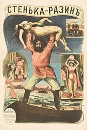
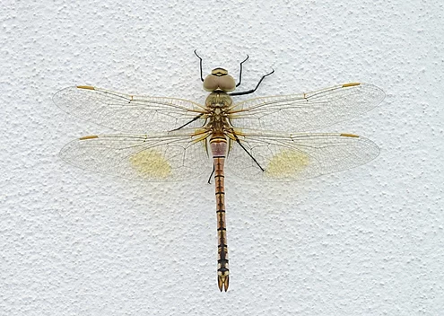

From today's featured article
The Benty Grange hanging bowl is a fragmentary Anglo-Saxon artefact from the seventh century CE. All that remains are parts of two escutcheons: bronze frames that are usually circular and elaborately decorated, and that sit along the outside of the rim or at the interior base of a hanging bowl. A third disintegrated soon after excavation. The escutcheons were found in 1848 by an antiquary, Thomas Bateman, in a tumulus in north-western Derbyshire. The grave also contained the boar-crested Benty Grange helmet. The surviving escutcheons are made of enamelled bronze and are 40 mm (1.6 in) in diameter. They show three dolphin-like creatures arranged in a circle, each biting the tail of the one ahead of it (design shown). Their bodies and the background are made of enamel, likely all yellow, with the creatures' outlines and eyes tinned or silvered, as are the borders of the escutcheons. The third escutcheon was of a different size and style and it may have originally been placed at the bottom of the bowl. (Full article...)
Did you know ...

- ... that the first Russian feature film, Stenka Razin (poster pictured), depicts the historical Cossack leader throwing a princess into the Volga?
- ... that would-be assassin John Schrank was foiled by a 50-page speech and a spectacles case?
- ... that the Balconcillo mutiny is considered to be the first coup d'état in the history of Peru?
- ... that Marie Vuillemin was acquitted in the trial of the Bonnot Gang, as the prosecution defined her according to her gender rather than her role in the gang?
- ... that New Zealand wrestler Leilani Tominiko (aka. Candy Lee) has a signature move called the Candy Crush?
- ... that the Seattle metropolitan area includes two major volcanoes, Mount Rainier and Glacier Peak?
- ... that for at least 90 minutes, Mori Calliope livestreamed herself begging video game developer Atlus to allow her to stream their game Persona 3?
- ... that the principal of a high school in Taiwan resigned after students held a Nazi-themed parade, complete with mock uniforms and a cardboard tank?
In the news
- The Odysseus robottomic lander (pictured) of the IM-1 mission performs the first commercial soft landing on the Moon.
- At the British Academy Film Awards, Oppenheimer wins Best Film and six other awards.
- Russian opposition leader Alexei Navalny dies in a corrective labor colony near Kharp, at the age of 47.
- In American football, the Kansas City Chiefs defeat the San Francisco 49ers to win the Super Bowl.
Ongoing: Israel–Hamas war · Myanmar civil war · Red Sea crisis · Russian invasion of Ukraine (timeline)
Recent deaths : Jack Biddle · Ira von Fürstenberg · Kagney Linn Karter · Juan Uriarte · Flaco · Paul D'Amato
On this day
February 25: Soviet Occupation Day in Georgia (1921); National Day in Kuwait (1961)
- 1843 – Royal Navy captain Lord George Paulet began a five-month occupation of the Hawaiian Islands.
- 1933 – USS Ranger (pictured), the United States Navy's first purpose-built aircraft carrier, was launched.
- 1951 – After being postponed due to World War II, the inaugural Pan American Games opened in Buenos Aires, Argentina.
- 1994 – Israeli physician Baruch Goldstein opened fire on Palestinian Muslims praying at the mosque in Hebron's Cave of the Patriarchs, killing 29 people and wounding 125 others.
- 2009 – At their headquarters in Pilkhana, members of the Bangladesh Rifles began a mutiny that resulted in 82 deaths.
Emma Catherine Embury (b. 1806) · Elizabeth Gertrude Britton (d. 1934) · Divya Bharti (b. 1974) · Don Bradman (d. 2001)
Today's featured picture

Anax ephippiger, commonly known as the vagrant emperor, is a species of dragonfly in the family Aeshnidae.
Photograph credit: Joaquim Alves Gaspar